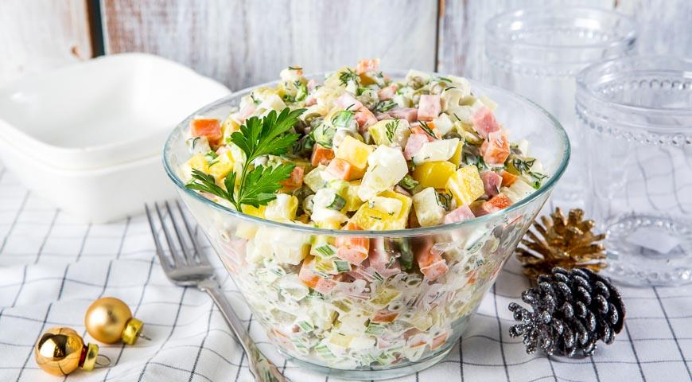
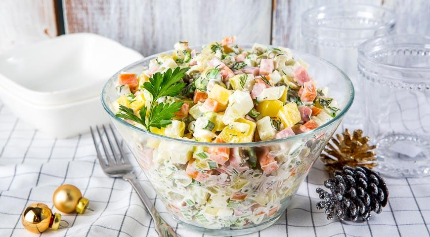

Оливье
Борщ
Цезарь

Сырники

Карбонара

Пончики
Шарлотка
Оладьи
Оливье
Борщ
Цезарь
Сырники
Карбонара
Пончики
Шарлотка
Оладьи
Сварить морковь и картофель. Сварить яйца вкрутую.Нарезать равными по размеру мелкими кубиками яйца, картофель, колбасу, морковку. Огурцы нарезать и немного отжать, чтобы не было много жидкости в салате. В нарезанные ингредиенты всыпать горошек (слив воду из него), нарезать зелень, смешать с майонезом. Посолить и поперчить. Убрать в холодильник на 1 ч.
Мясо нарезают небольшими кусочками. Выкладывают мясо в кастрюлю, заливают холодной водой. Доводят до кипения, снимают пену и варят мясо 1,5 часа на маленьком огне, под крышкой. Картофель очищают и нарезают крупными кусками. Свеклу очищают, нарезают соломкой. Обычно свёклу тушат в сковороде с добавлением лимонного сока или уксуса - можно сделать именно так. Но в этом рецепте свёкла добавляется в бульон в сыром виде и варится вместе с картошкой и капустой. Капусту шинкуют соломкой. Лук чистят и мелко нарезают. Морковь чистят и натирают на крупной терке. Сковороду нагревают, наливают растительное масло. В горячее масло выкладывают лук и морковь, обжаривают овощи, помешивая, 3-4 минуты на среднем огне. Добавляют томатную пасту, перемешивают и обжаривают овощи с томатом ещё 1 минуту. В мясной бульон добавляют картофель, свёклу, капусту, обжаренные лук и морковь. Добавляют соль и варят борщ до готовности картофеля, 20-25 минут.
Промыть, просушить и нарвать на небольшие кусочки листья салата, отложить в холодильник. В горячую сковородку положить 1 столовую ложку сливочного масла. После того, как оно полностью расплавится и начнет шипеть, кинуть нарезанный на пластины зубчик чеснока. Куриную грудку нарезать на кусочки приблизительно 1×3 см. Положить в сковороду к чесноку и маслу. Обжаривать на сильном огне приблизительно 10 минут до румяной корочки. Снять с огня. В ту же сковородку добавить еще одну столовую ложку сливочного масла и второй зубчик чеснока. В это время нарезать на небольшие кубики хлеб. Положить в сковороду и обжаривать до румяной корочки. Желательно непрерывно помешивать, чтобы не подгорело. Достать листья салата, туда же положить обжаренную куриную грудку, помидоры, нарезанные тонкой соломкой. Заправить соусом «Цезарь». Перемешать. Сверху положить получившиеся сухарики и натереть сыр.
Положите весь творог в кастрюльку и разомните его вилкой так, чтобы в нем не осталось крупных комков. Разбейте в него яйца, всыпьте сахар и тщательно все перемешайте. Лучше не использовать слишком сухой или слишком влажный творог, иначе сырники будут разваливаться в процессе приготовления. Всыпьте в творог 5 столовых ложек (с горкой) муки и тщательно перемешайте. Можно добавить немного больше муки, сырники получатся тогда более плотными. Или муки можно добавить чуть меньше, и тогда сырники будут нежнее. В итоге у вас должна получиться однородная масса, из которой можно будет лепить сырники. Поставьте сковороду на средний огонь и налейте в нее подсолнечное масло. Насыпьте на тарелку немного муки. Слепите несколько небольших шариков из получившейся творожной массы и положите их на тарелку. Лучше лепить разом 4–5 шариков — столько, сколько поместится одновременно на сковороду. Затем по очереди обкатывайте творожные шарики в муке, плющите их в небольшие лепешки (они не должны быть слишком тонкие) и выкладывайте на сковороду. Обжаривайте сырники 1–2 минуты до появления золотистой корочки. Затем переверните их на другую сторону и также обжарьте до золотистого состояния. Повторяйте, пока творог не закончится.
Вскипятите воду в большой кастрюле и сварите пасту до состояния аль денте. Обычно для этого нужно варить ее на минуту меньше, чем указано на пачке. Пока паста варится, растопите на сковороде масло и обжарьте на нем мелко нарезанные лук, чеснок и бекон. До мягкости и до отчетливого чесночного и жаренобеконного запаха. Снимите сковороду с огня и в глубокой миске взбейте четыре яичных желтка со сливками и тертым пармезаном. Посолите и поперчите смесь, еще раз взбейте. В готовые спагетти вывалите обжаренные с луком и чесноком кусочки бекона. Влейте смесь сливок, желтков и пармезана, перемешайте. И сразу подавайте, посыпав свеженатертым сыром и черным молотым перцем.
В сухую чистую миску выложить творог, добавить яйца, муку, сахар, соду и соль и аккуратно лопаткой или деревянной ложкой смешать все до однородной консистенции. В небольшой сотейник налить оливковое (или растительное) масло — столько, чтобы можно было погрузить хотя бы половину пончика. Хорошо разогреть масло. При помощи чайной ложки или руками скатать из теста шарики, каждый размером чуть меньше грецкого ореха. Чтобы тесто не липло к рукам, их можно периодически обмакивать в муку. Бросить пончики в кипящее масло и жарить на небольшом огне, постоянно переворачивая шумовкой, чтобы они равномерно подрумянились со всех сторон и приобрели красивый золотисто-коричневый оттенок. Готовые пончики выложить на бумажное полотенце и оставить на одну-две минуты — чтобы оно впитало лишнее масло. Подавать пончики горячими, выложив на блюдо и посыпав сахарной пудрой, смешанной с ванилином.
Разогреть духовку. Отделить белки от желтков. Белки взбить в крепкую пену с щепоткой соли, постепенно добавляя сахар. Продолжать взбивать, добавляя по одному желтки, затем разрыхлитель и муку. Тесто по консистенции должно напоминать сметану. Смазать противень растительным маслом. Вылить половину теста на противень, разложить равномерно нарезанные дольками яблоки, залить второй половиной теста. Поместить противень в разогретую духовку. 3 минуты подержать при температуре 200 градусов, затем убавить до 180 и выпекать 20–25 минут.
Кефир смешать с сахаром, солью и содой. Постепенно вмешать муку так, чтобы получилось тесто консистенции густой сметаны. Разогреть сковороду. Если она не антипригарная, добавить масло: сливочное, растительное или их смесь. Выложить тесто столовой ложкой на раскаленную сковороду, жарить около полутора минут, на поверхности теста должны появиться пузырьки, а внизу тесто должно зазолотиться. Перевернуть оладьи и жарить их еще около минуты, до такого же золотистого цвета. Так же поступить со всем тестом.